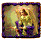
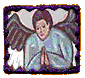

Australia's premier Spanish language Mexican punk band Nuestro propio animal...
It translates as 'an animal of our own', my Chilean friend Pedro tells me. What a line. The dichotomies of wildness and control, ownership and alienation, are brought into sharp relief in just five words, or three if you don't speak English properly.
It's no small irony, then, that I could hear these words being spat out whenever I stumbled into a dark, beer-soaked den where Cerveza y Putas was trashing our musical landscape. Anarchists without a cause, satirists without a joke, angry without a purpose, Cerveza y Putas were just what we didn't need at a time we didn't need it, which is how they became the most important post(modern)-punk band in Australia. They're animals, no question, but can they ever truly be our own? No. Cerveza y Putas are ultimately too distant, too perverse, too other to ever be contained within its audience's expectations.
Perhaps it all started (as all these things do) with an undergraduate prank. Put a Spanish-speaking non-singer, a classically trained guitarist, a jazz drummer and a drug dealer holding a bass guitar onto stage, and watch it all implode. Musically, it was a farce. But those lucky enough to witness those formative gigs found that Cerveza y Putas (named by a friend of the band in memoriam to his parents who had died in a sidecar accident in 1976) had the chutzpah, the charisma, the sheer spunk, to tap into the stream of consciousness that has fuelled music based on sheer hate, from Woody Guthrie through the Stooges and early Split Enz, right to the present day.
Without wanting to overplay my own role in Cerveza's development, I was there from the first days. Like Jon Landau stumbling across Bruce Springsteen in 1974, I knew that I was witnessing history. I couldn't back away from it even if I wanted to. I'll never forget the words spoken to me by bassist Dave Krantz at one of the band's embryonic gigs, while watching another band on the bill:
"That bass player - y'know, he's a really good bass player. He can play really complex riffs without even looking at his bass. But if you look at him you can tell that he's a total tosser. And the band's really boring."
Lives can spin around on a twenty-cent piece like a Volvo with a tight turning circle. Sometimes it takes no more than one conversation. At this moment, I felt that my fate, and the fate of contemporary pub rock, were both spinning on the same proverbial item of trivial currency.
On stage, Cerveza were a pastiche of a pastiche. They taught us to forget everything we ever knew, but to act like we'd remembered it wrongly. Most bands welcome even the most inappropriate cover of their songs - mediocrity needs exposure - and yet I have witnessed innumerable songwriters break down and cry upon discovering that Cerveza is rehearsing a tune that they penned. Cerveza y Putas undermined everything that was good and noble in what they played they brought out the Satan in the most angelic child. They weren't out to trash rock'n'roll by conquering the charts. Too smart and too cynical for that self-defeating game, they were out to destroy the bands that were conquering the charts. Their success in achieving this nihilist goal, within the limited period they were an effective band, chills me to this day. Cerveza y Putas were instrumental in the demise of Ratcat, The Hummingbirds, Lemonheads, Pixies, The Replacements and Hüsker Dü, but there can be little doubt that the list of casualties does not stop there. Just how much damage they really did we may never know.
In the earliest days of the band, those who witnessed a Cerveza show frequently staggered from the room shocked and appalled, and even nausea was a common reaction. (Guitarist Paul Champion later admitted to me, "I'd be sick at those first Cerveza shows all the time. It was pretty rugged."). And yet the crowds kept coming back for more. The reason was David Penberthy. Penberthy, tagged as the band's 'Swarthy Immigrant Singing Sensation' by an early record company press release, combined Wildean bon mots with ESL non-sequiturs in a manner not seen since Joao Gilberto set himself on fire while trying to light his own flatulence onstage in Budapest in 1968. Back in 1992, seas of fans gazed adoringly at Penberthy's ample frame, feeling the addictive thrall of knowing that the man on stage could effortlessly glance into the depths of your soul, and wouldn't hesitate to make a mystifying comment about what he'd seen.
Within months of Cerveza's debut, Penberthy had developed a cult of personality that threatened to tear the band apart. By June 1992, Penberthy was flooded with increasingly lucrative offers to launch a solo career. Smart enough to realise that going solo would have secured his financial future at the expense of his credibility and the privacy of his family, Penberthy came up with a typically left-of-centre plan to save the band. He would stay with Cerveza only if it started writing its own songs. The group that had made itself infamous by taking other people's artworks and metaphorically defecating over them onstage, would now start creating its own.
It was a typically Penberthy-esque masterstroke that ensured another few months of headlines for a band that was already Australia's most notorious (perhaps second only to the reformed Skyhooks).
Even when Cerveza became musically predictable (estimates vary between the second and the third song they wrote as a band), Penberthy's Man-Size charisma and scattergun wit ensured that they remained the most exciting live prospect in the southern hemisphere. Their domination of the poorest half of the world was confirmed during their wildly successful but controversy-studded tour of Nicaragua, Panama, Cuba and Venezuela in 1994. Once relevant officials had been bribed and charges dropped, Cerveza returned to the country more famous than ever, but perhaps the ructions they had endured in the most slimy and corrupt of all continents had robbed them of the fiery spirit of chaos that had fuelled their best work.
Dave Krantz's drug problems had become increasingly pronounced, Paul Champion was working on a rock opera that left an ever-diminishing amount of time for the band, and drummer Ben Allen had not adjusted well to fame, using the notoriety of his name to run up at most bars in town limitless tabs that (due to some poor investment decisions) he had little hope of paying off.
They knew that if it was better to burn out than fade away, they'd have to go one better and blow up. They did so in 1995, playing a series of profoundly drunken but incendiary shows that would forever cement their reputation as Australia's greatest Spanish-language punk band. In the dying seconds of one of their dying shows, Penberthy is heard to shout joyously, apropos of nothing, "Up and down like a joggers' nipple." And so they had been. After a few short years together, Cerveza y Putas had indeed collapsed as everyone had expected them to do; but not before changing the course of contemporary music.
It wasn't surprising, given the superhuman force of the four personalities in the band, that there was seemingly little love lost once it was all over. The four members soon moved to three different states, and media reports gleefully announced that no band member would acknowledge any other when passing in the street.
Of course, for those on the inside (like myself), such reports were not only exaggerated, but actively engineered by the band in a Machiavellian stratagem to continue their notoriety even after death.
The chemistry was too strong to break forever, but how could Cerveza, which had formed its career on trashing clichés, get back together without falling into the hoariest cliché of them all the Hits'n'Memories Reunion Tour? The answer, once again, lay in Penberthy's perverse mind. The band would play a single gig at a semi-disused digger pub next to a soul-crushing concrete shopping mall in a far-flung outer suburb of Canberra. The venue would have a maximum capacity of 120. No prior rehearsal would be allowed.
And so it shall be. The sheer contempt they have shown for the legions of fans who have waited patiently for their reformation, in this single gesture, both underlines their importance as a band and will further enshrine their place in musical history. For those who chart the social and artistic ebb and flow of our fragile culture, I would as soon miss it as I would be the A&R rep who dismissed The Velvet Underground & Nico as 'a bunch of tuneless droning- and what's with the stupid banana on the cover?'
To return to the original conundrum, Cerveza y Putas will not be our animals; but we can count ourselves lucky to be born at a time when we could witness their rutting.
Simon Healy
|  |  | ||
| The Early Days | Here and Now | home | Nuestro Propio Animal |
site design, scripting and shockwave audio by virtual artists and paul champion. hosted by virtual artists.